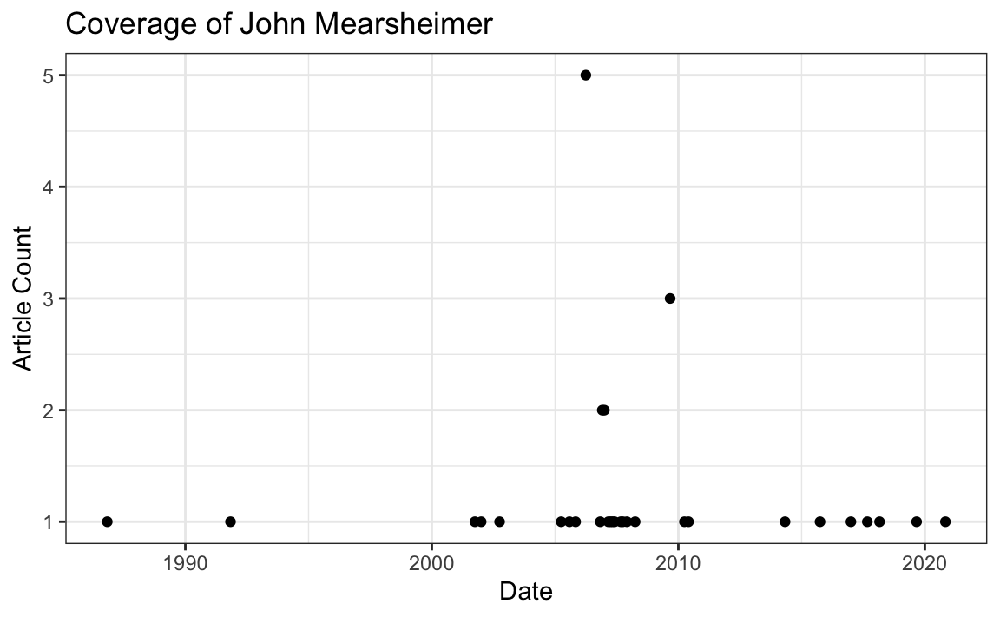
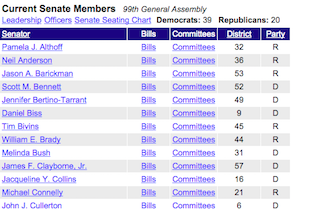
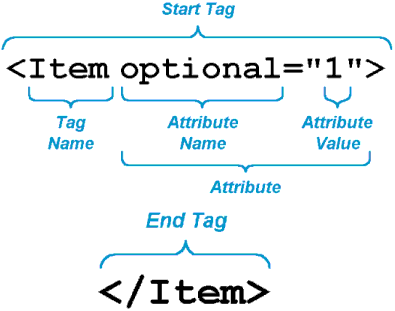

Chapter 17 Collecting Data from the Web
17.1 Introduction
There is a ton of web data that is useful to social scientists, including:
- Social media.
- News media.
- Government publications.
- Organizational records.
There are two ways to get data off the web:
- Web APIs - i.e., application-facing for computers.
- Webscraping - i.e., user-facing websites for humans.
Rule of Thumb: Check for API first. If not available, scrape.
17.2 Web APIs
API stands for Application Programming Interface. Broadly defined, an API is a set of rules and procedures that facilitate interactions between computers and their applications.
A very common type of API is the Web API, which (among other things) allows users to query a remote database over the internet.
Web APIs take on a variety of formats, but the vast majority adheres to a particular style known as Representational State Transfer or REST. What makes these “RESTful” APIs so convenient is that we can use them to query databases using URLs.
RESTful Web APIs are all around you…
Consider a simple Google search:

Ever wonder what all that extra stuff in the address bar was all about? In this case, the full address is Google’s way of sending a query to its databases requesting information related to the search term “golden state warriors.”

In fact, it looks like Google makes its query by taking the search terms, separating each of them with a “+”, and appending them to the link “https://www.google.com/#q=”. Therefore, we should be able to actually change our Google search by adding some terms to the URL and following the general format…
Learning how to use RESTful APIs is all about learning how to format these URLs so that you can get the response you want.
17.2.1 Some Basic Terminology
Let’s get on the same page with some basic terminology:
Uniform Resource Location (URL): A string of characters that, when interpreted via the Hypertext Transfer Protocol (HTTP), points to a data resource, notably files written in Hypertext Markup Language (HTML) or a subset of a database. This is often referred to as a “call.”
HTTP Methods/Verbs:
GET: Requests a representation of a data resource corresponding to a particular URL. The process of executing the GET method is often referred to as a “GET request” and is the main method used for querying RESTful databases.
HEAD, POST, PUT, DELETE: Other common methods, though rarely used for database querying.
17.2.2 How Do GET Requests Work?
A Web Browsing Example
As you might suspect from the example above, surfing the web is basically equivalent to sending a bunch of GET requests to different servers and asking for different files written in HTML.
Suppose, for instance, I wanted to look something up on Wikipedia. My first step would be to open my web browser and type in http://www.wikipedia.org. Once I hit return, I would see the page below.

Several different processes occured, however, between me hitting “return” and the page finally being rendered. In order:
The web browser took the entered character string, used the command-line tool “Curl” to write a properly formatted HTTP GET request, and submitted it to the server that hosts the Wikipedia homepage.
After receiving this request, the server sent an HTTP response, from which Curl extracted the HTML code for the page (partially shown below).
The raw HTML code was parsed and then executed by the web browser, rendering the page as seen in the window.
#> No encoding supplied: defaulting to UTF-8.
#> [1] "<!DOCTYPE html>\n<html lang=\"mul\" class=\"no-js\">\n<head>\n<meta charset=\"utf-8\">\n<title>Wikipedia</title>\n<meta name=\"description\" content=\"Wikipedia is a free online encyclopedia, created and edited by volunteers around the world and hosted by the Wikimedia Foundation.\">\n<script>\ndocument.documentElement.className = document.documentElement.className.replace( /(^|\\s)no-js(\\s|$)/, \"$1js-enabled$2\" );\n</script>\n<meta name=\"viewport\" content=\"initial-scale=1,user-scalable=yes\">\n<link rel=\"apple-touch-icon\" href=\"/static/apple-touch/wikipedia.png\">\n<link rel=\"shortcut icon\" href=\"/static/favicon/wikipedia.ico\">\n<link rel=\"license\" href=\"//creativecommons.org/licenses/by-sa/3.0/\">\n<style>\n.sprite{background-image:url(portal/wikipedia.org/assets/img/sprite-46c49284.png);background-image:linear-gradient(transparent,transparent),url(portal/wikipedia.org/assets/img/sprite-46c49284.svg);background-repeat:no-repeat;display:inline-block;vertical-align:middle}.svg-Commons-logo_sister{background-posit"Web Browsing as a Template for RESTful Database Querying
The process of web browsing described above is a close analogue for the process of database querying via RESTful APIs, with only a few adjustments:
While the Curl tool will still be used to send HTML GET requests to the servers hosting our databases of interest, the character string that we supply to Curl must be constructed so that the resulting request can be interpreted and succesfully acted upon by the server. In particular, it is likely that the character string must encode search terms and/or filtering parameters, as well as one or more authentication codes. While the terms are often similar across APIs, most are API-specific.
Unlike with web browsing, the content of the server’s response that is extracted by Curl is unlikely to be HTML code. Rather, it will likely be raw text response that can be parsed into one of a few file formats commonly used for data storage. The usual suspects include .csv, .xml, and .json files.
Whereas the web browser capably parsed and executed the HTML code, one or more facilities in R, Python, or other programming languages will be necessary for parsing the server response and converting it into a format for local storage (e.g., matrices, dataframes, databases, lists, etc.).
17.2.3 Finding APIs
More and more APIs pop up every day. Programmable Web offers a running list of APIs. This list provides a list of APIs that may be useful to Political Scientists.
Here are some APIs that may be useful to you:
- NYT Article API: Provides metadata (title, summaries, dates, etc.) from all New York Times articles in their archive.
- GeoNames geographical database: Provides lots of geographical information for all countries and other locations. The
geonamespackage provides a wrapper for R. - The Manifesto Project: Provides text and other information on political party manifestos from around the world. It currently covers over 1,000 parties from 1945 until today in over 50 countries on five continents. The
manifestoRpackage provides a wrapper for R. - The Census Bureau: Provides datasets from the US Census Bureau. The
tidycensuspackage allows users to interface with the US Census Bureau’s decennial Census and five-year American Community APIs.
17.2.4 Getting API Access
Most APIs requires a key or other user credentials before you can query their database.
Getting credentialized with a API requires that you register with the organization. Most APIs are set up for developers, so you will likely be asked to register an “application.” All this really entails is coming up with a name for your app/bot/project and providing your real name, organization, and email. Note that some more popular APIs (e.g., Twitter, Facebook) will require additional information, such as a web address or mobile number.
Once you have successfully registered, you will be assigned one or more keys, tokens, or other credentials that must be supplied to the server as part of any API call you make. To make sure that users are not abusing their data access privileges (e.g., by making many rapid queries), each set of keys will be given rate limits governing the total number of calls that can be made over certain intervals of time.
For example, the NYT Article API has relatively generous rate limits — 4,000 requests per day and 10 requests per minute. So we need to “sleep”" 6 seconds between calls to avoid hitting the per minute rate limit.
17.2.5 Using APIs in R
There are two ways to collect data through APIs in R:
- [Plug-n-play packages.][Collecting Twitter Data with RTweet]
Many common APIs are available through user-written R Packages. These packages offer functions that “wrap” API queries and format the response. These packages are usually much more convenient than writing our own query, so it is worth searching around for a package that works with the API we need.
If no wrapper function is available, we have to write our own API request and format the response ourselves using R. This is trickier, but definitely doable.
17.3 Writing API Queries
If no wrapper package is available, we have to write our own API query and format the response ourselves using R. This is trickier, but definitely doable.
In this unit, we will practice constructing our own API queries using the New York Time’s Article API. This API provides metadata (title, date, summary, etc.) on all of the New York Times articles.
Fortunately, this API is very well documented!
You can even try it out here.
Load the following packages to get started:
17.3.1 Constructing the API GET Request
Likely the most challenging part of using web APIs is learning how to format your GET request URLs. While there are common architectures for such URLs, each API has its own unique quirks. For this reason, carefully reviewing the API documentation is critical.
Most GET request URLs for API querying have three or four components:
Authentication Key/Token: A user-specific character string appended to a base URL telling the server who is making the query; allows servers to efficiently manage database access.
Base URL: A link stub that will be at the beginning of all calls to a given API; points the server to the location of an entire database.
Search Parameters: A character string appended to a base URL that tells the server what to extract from the database; basically a series of filters used to point to specific parts of a database.
Response Format: A character string indicating how the response should be formatted; usually one of .csv, .json, or .xml.
Let’s go ahead and store these values as variables:
#key <- "YOURKEY HERE"
base.url <- "http://api.nytimes.com/svc/search/v2/articlesearch.json"
search_term <- "John Mearsheimer"How did I know the base.url? I read the documentation. Notice that this base.url also includes the response format(.jston), so we do not need to configure that directly.
We are ready to make the request. We can use the GET function from the httr package (another tidyverse package) to make an HTTP GET Request.
Now, we have an object called r. We can get all the information we need from this object. For instance, we can see that the URL has been correctly encoded by printing the URL. Click on the link to see what happens.
r$url
#> [1] "http://api.nytimes.com/svc/search/v2/articlesearch.json?q=John%20Mearsheimer&api-key=Onz0BobMTn2IRJ7krcT5RXHknkGLqiaI"Challenge 1: Adding a date range.
What if we only want to search within a particular date range? The NYT Article API allows us to specify start and end dates.
Alter the get.request code above so that the request only searches for articles in the year 2005.
You are going to need to look at the documentation here to see how to do this.
Challenge 2: Specifying a results page.
The above will return the first 10 results. To get the next 10, you need to add a “page” parameter. Change the search parameters above to get the second 10 results.
17.3.2 Parsing the Response
We can read the content of the server’s response using the content() function.
response <- httr::content(r, "text")
str_sub(response, 1, 1000)
#> [1] "{\"status\":\"OK\",\"copyright\":\"Copyright (c) 2020 The New York Times Company. All Rights Reserved.\",\"response\":{\"docs\":[{\"abstract\":\"Regarding \\\"Since Dayton Is Doomed, Get On With the Partition of Bosnia\\\" (Opinion, Oct. 8) by John Mearsheimer:. To partition Bosnia and launch an exercise of social engineering with the transfer of thousands of people from one area to another wo\",\"web_url\":\"https://www.nytimes.com/1997/10/14/opinion/IHT-partition-is-no-answer-letters-to-the-editor.html\",\"snippet\":\"Regarding \\\"Since Dayton Is Doomed, Get On With the Partition of Bosnia\\\" (Opinion, Oct. 8) by John Mearsheimer:. To partition Bosnia and launch an exercise of social engineering with the transfer of thousands of people from one area to another wo\",\"lead_paragraph\":\"Regarding \\\"Since Dayton Is Doomed, Get On With the Partition of Bosnia\\\" (Opinion, Oct. 8) by John Mearsheimer:\",\"source\":\"International Herald Tribune\",\"multimedia\":[],\"headline\":{\"main\":\"Partition Is No Answer : LETTERS TO THE EDIT"What you see here is JSON text encoded as plain text. JSON stands for “Javascript object notation.” Think of JSON like a nested array built on key/value pairs.
We want to convert the results from JSON format to something easier to work with – notably a dataframe.
The jsonlite package provides several easy conversion functions for moving between JSON and vectors, dataframes, and lists. Let’s use the function fromJSON to convert this response into something we can work with:
# Convert JSON response to a dataframe
response_df <- fromJSON(response, simplifyDataFrame = TRUE, flatten = TRUE)
# Inspect the dataframe
str(response_df, max.level = 2)
#> List of 3
#> $ status : chr "OK"
#> $ copyright: chr "Copyright (c) 2020 The New York Times Company. All Rights Reserved."
#> $ response :List of 2
#> ..$ docs:'data.frame': 10 obs. of 27 variables:
#> ..$ meta:List of 3That looks intimidating! But it is really just a big, nested list. Let’s see what we got in there:
# See all items
names(response_df)
#> [1] "status" "copyright" "response"
# This is boring
response_df$status
#> [1] "OK"
# So is this
response_df$copyright
#> [1] "Copyright (c) 2020 The New York Times Company. All Rights Reserved."
# This is what we want!
names(response_df$response)
#> [1] "docs" "meta"Within response_df$response, we can extract a number of interesting results, including the number of total hits, as well as information on the first 10 documents:
# What is in 'meta'?
response_df$response$meta
#> $hits
#> [1] 1639286
#>
#> $offset
#> [1] 0
#>
#> $time
#> [1] 203
# Pull out number of hits
response_df$response$meta$hits
#> [1] 1639286
# Check out docs
names(response_df$response$docs)
#> [1] "abstract" "web_url"
#> [3] "snippet" "lead_paragraph"
#> [5] "source" "multimedia"
#> [7] "keywords" "pub_date"
#> [9] "document_type" "news_desk"
#> [11] "section_name" "_id"
#> [13] "word_count" "uri"
#> [15] "type_of_material" "print_section"
#> [17] "print_page" "headline.main"
#> [19] "headline.kicker" "headline.content_kicker"
#> [21] "headline.print_headline" "headline.name"
#> [23] "headline.seo" "headline.sub"
#> [25] "byline.original" "byline.person"
#> [27] "byline.organization"
# Put it in another variable
docs <- response_df$response$docs17.3.3 Iteration through Results Pager
That is great. But we only have 10 items. The original response said we had 168 hits! Which means we have to make 168/10, or 17 requests to get them all. Sounds like a job for iteration!
First, let’s write a function that passes a search term and a page number, and returns a dataframe of articles:
nytapi <- function(term = NULL, n){
base.url = "http://api.nytimes.com/svc/search/v2/articlesearch.json"
# Send GET request
r <- GET(base.url, query = list(`q` = term,
`api-key` = key,
`page` = n))
# Parse response to JSON
response <- httr::content(r, "text")
response_df <- fromJSON(response, simplifyDataFrame = T, flatten = T)
print(paste("Scraping page: ", as.character(n)))
return(response_df$response$docs)
}
docs <- nytapi("John Mearsheimer", 2)
#> [1] "Scraping page: 2"Now, we are ready to iterate over each page. First, let’s review what we have done so far:
# Set key and base
base.url = "http://api.nytimes.com/svc/search/v2/articlesearch.json"
search_term = "John Mearsheimer" # Change me
# Send GET request
r <- GET(base.url, query = list(`fq` = search_term,
`api-key` = key))
# Parse response to JSON
response <- httr::content(r, "text")
response_df <- fromJSON(response, simplifyDataFrame = T, flatten = T)
# Extract hits -- BUGGGGG
# hits = response_df$response$meta$hits
hits = 168
# Get number of pages
pages = ceiling(hits/10)
# Modify function to sleep
nytapi_slow <- slowly(nytapi, rate = rate_delay(1))
# Iterate over pages, getting all docs
docs_list <- map((1:pages), ~nytapi_slow(term = search_term, n = .))
#> [1] "Scraping page: 1"
#> [1] "Scraping page: 2"
#> [1] "Scraping page: 3"
#> [1] "Scraping page: 4"
#> [1] "Scraping page: 5"
#> [1] "Scraping page: 6"
#> [1] "Scraping page: 7"
#> No encoding supplied: defaulting to UTF-8.
#> [1] "Scraping page: 8"
#> No encoding supplied: defaulting to UTF-8.
#> [1] "Scraping page: 9"
#> No encoding supplied: defaulting to UTF-8.
#> [1] "Scraping page: 10"
#> No encoding supplied: defaulting to UTF-8.
#> [1] "Scraping page: 11"
#> No encoding supplied: defaulting to UTF-8.
#> [1] "Scraping page: 12"
#> No encoding supplied: defaulting to UTF-8.
#> [1] "Scraping page: 13"
#> No encoding supplied: defaulting to UTF-8.
#> [1] "Scraping page: 14"
#> No encoding supplied: defaulting to UTF-8.
#> [1] "Scraping page: 15"
#> No encoding supplied: defaulting to UTF-8.
#> [1] "Scraping page: 16"
#> No encoding supplied: defaulting to UTF-8.
#> [1] "Scraping page: 17"
# Flatten to create one bit dataframe
docs_df <- bind_rows(docs_list)17.3.4 Visualizing Results
To figure out how John Mearsheimer’s popularity is changing over time, all we need to do is add an indicator for the year and month each article was published in:
# Format pub_date using lubridate
docs_df$date <- ymd_hms(docs_df$pub_date)
by_month <- docs_df %>% group_by(floor_date(date, "month")) %>%
summarise(count = n()) %>%
rename(month = 1)
#> `summarise()` ungrouping output (override with `.groups` argument)
by_month %>%
ggplot(aes(x = month, y = count)) +
geom_point() +
theme_bw() +
xlab(label = "Date") +
ylab(label = "Article Count") +
ggtitle(label = "Coverage of John Mearsheimer")
17.3.5 More Resources
The documentation for httr includes two useful vignettes:
- httr quickstart guide: Summarizes all the basic
httrfunctions like above. - Best practices for writing an API package: Document outlining the key issues involved in writing API wrappers in R.
17.4 Webscraping
If no API is available, we can scrape a website directory. Webscraping has a number of benefits and challenges compared to APIs:
Webscraping Benefits:
- Any content that can be viewed on a webpage can be scraped. Period.
- No API needed.
- No rate-limiting or authentication (usually).
Webscraping Challenges:
- Rarely tailored for researchers.
- Messy, unstructured, inconsistent.
- Entirely site-dependent.
17.4.0.1 Some Disclaimers
- Check a site’s terms and conditions before scraping.
- Be nice - do not hammer the site’s server. Review these ethical webscraping tips.
- Sites change their layout all the time. Your scraper will break.
17.4.1 What Is a Website?
A website is some combination of codebase + database that lives on a server.
When it gets to us (the “front end”), it is delivered to us as HTML + CSS stylesheets + JavaScript.
"<!DOCTYPE html>\n<html lang=\"mul\" dir=\"ltr\">\n<head>\n<!-- Sysops:
Please do not edit the main template directly; update /temp and synchronise.
-->\n<meta charset=\"utf-8\">\n<title>Wikipedia</title>\n<!--[if lt IE 7]><meta
http-equiv=\"imagetoolbar\" content=\"no\"><![endif]-->\n<meta name=\"viewport\"
content=\"i"Your browser turns that into a nice layout.

17.4.2 Websites Return HTML
The core of a website is HTML (Hyper Text Markup Language). HTML defines the structure of a webpage using a series of elements. HTML elements tell the browser how to display the page by labeling pieces of content: “This is a heading,” “this is a paragraph,” “this is a link,” etc.
<!DOCTYPE html>
<html>
<head>
<title>Page title</title>
</head>
<body>
<p>Hello world!</p>
</body>
</html>HTML elements can contain other elements, like a tree:

17.4.3 HTML Elements
An HTML element is defined by a start tag, some content, and an end tag.

html-tags
The HTML element is everything from the start tag to the end tag.
Common HTML tags
| Tag | Meaning |
|---|---|
<head> |
page header (metadata, etc.) |
<body> |
holds all of the content |
<p> |
regular text (paragraph) |
<h1>,<h2>,<h3> |
header text, levels 1, 2, 3 |
ol,,<ul>,<li> |
ordered list, unordered list, list item |
<a href="page.html"> |
link to “page.html” |
<table>,<tr>,<td> |
table, table row, table item |
<div>,<span> |
general containers |

page-structure
17.4.3.1 HTML Attributes
- HTML elements can have attributes.
- Attributes provide additional information about an element.
- Attributes are always specified in the start tag.
- Attributes come in name-value pairs like: name=“value”

- Sometimes we can find the data we want by just using HTML tags or attributes (e.g, all the
<a>tags). - More often, that is not enough: There might be 1,000
<a>tags on a page. But maybe we want only the<a>tags inside of a<p>tag. - Enter CSS…
17.4.4 CSS
CSS stands for Cascading Style Sheet. CSS defines how HTML elements are to be displayed.
HTML came first. But it was only meant to define content, not format it. While HTML contains tags like <font> and <color>, this is a very inefficient way to develop a website. Some websites can easily contain 100+ individual pages, each with their own HTML code.
To solve this problem, CSS was created specifically to display content on a webpage. Now, one can change the look of an entire website just by changing one file.
Most web designers litter the HTML markup with tons of classes and ids to provide “hooks” for their CSS.
You can piggyback on these to jump to the parts of the markup that contain the data you need.
17.4.4.1 CSS Anatomy
- Selectors:
- Element selector:
p - Class selector:
p class="blue" - I.D. selector:
p id="blue"
- Element selector:
- Declarations:
- Selector:
p - Property:
background-color - Value:
yellow
- Selector:
- Hooks:

17.4.4.2 CSS + HTML
Challenge 1.
Find the CSS selectors for the following elements in the HTML above:
- The entire table.
- The row containing “Kurtis McCoy.”
- Just the element containing first names.
(Hint: There will be multiple solutions for each.)
17.4.5 Finding Elements with Selector Gadget
Selector Gadget is a browser plugin to help you find HTML elements. Install Selector Gadget on your browser by following these instructions.
Once installed, run Selector Gadget and simply click on the type of information you want to select from the webpage. Once this is selected, you can then click the pieces of information you do not want to keep. Do this until only the pieces you want to keep remain highlighted, then copy the selector from the bottom pane.
Here is the basic strategy of webscraping:
- Use Selector Gadget to see how your data is structured.
- Pay attention to HTML tags and CSS selectors.
- Pray that there is some kind of pattern.
- Use R and add-on modules like
RVestto extract just that data.
Challenge 2.
Go to http://rochelleterman.github.io/. Using Selector Gadget,
- Find the CSS selector capturing all rows in the table.
- Find the image source URL.
- Find the HREF attribute of the link.
17.5 Scraping Presidential Statements
To demonstrate webscraping in R, we are going to collect records on presidential statements here: https://www.presidency.ucsb.edu/
Let’s say we are interested in how presidents speak about “space exploration.” On the website, we punch in this search term, and we get the following 325 results.
Our goal is to scrape these records and store pertinent information in a dataframe. We will be doing this in two steps:
- Write a function to scrape each individual record page (these notes).
- Use this function to loop through all results, and collect all pages (homework).
Load the following packages to get started:
17.5.1 Using RVest to Read HTML
The package RVest allows us to:
- Collect the HTML source code of a webpage.
- Read the HTML of the page.
- Select and keep certain elements of the page that are of interest.
Let’s start with step one. We use the read_html function to call the results URL and grab the HTML response. Store this result as an object.
document1 <- read_html("https://www.presidency.ucsb.edu/documents/special-message-the-congress-relative-space-science-and-exploration")
# Let's take a look at the object we just created
document1
#> {html_document}
#> <html lang="en" dir="ltr" prefix="content: http://purl.org/rss/1.0/modules/content/ dc: http://purl.org/dc/terms/ foaf: http://xmlns.com/foaf/0.1/ og: http://ogp.me/ns# rdfs: http://www.w3.org/2000/01/rdf-schema# sioc: http://rdfs.org/sioc/ns# sioct: http://rdfs.org/sioc/types# skos: http://www.w3.org/2004/02/skos/core# xsd: http://www.w3.org/2001/XMLSchema#">
#> [1] <head profile="http://www.w3.org/1999/xhtml/vocab">\n<meta charset="utf-8 ...
#> [2] <body class="html not-front not-logged-in one-sidebar sidebar-first page- ...This is pretty messy. We need to use RVest to make this information more usable.
17.5.2 Find Page Elements
RVest has a number of functions to find information on a page. Like other webscraping tools, RVest lets you find elements by their:
- HTML tags.
- HTML attributes.
- CSS selectors.
Let’s search first for HTML tags.
The function html_nodes searches a parsed HTML object to find all the elements with a particular HTML tag, and returns all of those elements.
What does the example below do?
html_nodes(document1, "a")
#> {xml_nodeset (75)}
#> [1] <a href="#main-content" class="element-invisible element-focusable">Skip ...
#> [2] <a href="https://www.presidency.ucsb.edu/">The American Presidency Proje ...
#> [3] <a class="btn btn-default" href="https://www.presidency.ucsb.edu/about"> ...
#> [4] <a class="btn btn-default" href="/advanced-search"><span class="glyphico ...
#> [5] <a href="https://www.ucsb.edu/" target="_blank"><img alt="ucsb wordmark ...
#> [6] <a href="/documents" class="active-trail dropdown-toggle" data-toggle="d ...
#> [7] <a href="/documents/presidential-documents-archive-guidebook">Guidebook</a>
#> [8] <a href="/documents/category-attributes">Category Attributes</a>
#> [9] <a href="/statistics">Statistics</a>
#> [10] <a href="/media" title="">Media Archive</a>
#> [11] <a href="/presidents" title="">Presidents</a>
#> [12] <a href="/analyses" title="">Analyses</a>
#> [13] <a href="https://giving.ucsb.edu/Funds/Give?id=185" title="">GIVE</a>
#> [14] <a href="/documents/presidential-documents-archive-guidebook" title="">A ...
#> [15] <a href="/documents" title="" class="active-trail">Categories</a>
#> [16] <a href="/documents/category-attributes" title="">Attributes</a>
#> [17] <a href="/documents/app-categories/presidential" title="Presidential (73 ...
#> [18] <a href="/documents/app-categories/spoken-addresses-and-remarks/presiden ...
#> [19] <a href="/documents/app-categories/spoken-addresses-and-remarks/presiden ...
#> [20] <a href="/documents/app-categories/written-presidential-orders/president ...
#> ...That is a lot of results! Many elements on a page will have the same HTML tag. For instance, if you search for everything with the a tag, you are likely to get a lot of stuff, much of which you do not want.
In our case, we only want the links corresponding to the speaker Dwight D. Eisenhower.

17.5.3 Get Attributes and Text of Elements
Once we identify elements, we want to access information in those elements. Oftentimes this means two things:
- Text.
- Attributes.
Getting the text inside an element is pretty straightforward. We can use the html_text() command inside of RVest to get the text of an element:
# Scrape individual document page
document1 <- read_html("https://www.presidency.ucsb.edu/documents/special-message-the-congress-relative-space-science-and-exploration")
# Identify element with speaker name
speaker <- html_nodes(document1, ".diet-title a") %>%
html_text() # Select text of element
speaker
#> [1] "Dwight D. Eisenhower"You can access a tag’s attributes using html_attr. For example, we often want to get a URL from an a (link) element. This is the URL the link “points” to. It is contained in the attribute href:
17.5.4 Let’s DO This
Believe it or not, that is all you need to scrape a website. Let’s apply those skills to scrape a sample document from the UCSB website – the first item in our search results.
We will collect the document’s date, speaker, title, and full text.
Think: Why are we doing through all this effort to scrape just one page?
- Date
document1 <- read_html("https://www.presidency.ucsb.edu/documents/special-message-the-congress-relative-space-science-and-exploration")
date <- html_nodes(document1, ".date-display-single") %>%
html_text() %>% # Grab element text
mdy() # Format using lubridate
date
#> [1] "1958-04-02"- Speaker
speaker <- html_nodes(document1, ".diet-title a") %>%
html_text()
speaker
#> [1] "Dwight D. Eisenhower"- Title
title <- html_nodes(document1, "h1") %>%
html_text()
title
#> [1] "Special Message to the Congress Relative to Space Science and Exploration."- Text
text <- html_nodes(document1, "div.field-docs-content") %>%
html_text()
# This is a long document, so let's just display the first 1,000 characters
text %>% str_sub(1, 1000)
#> [1] "\n To the Congress of the United States:\nRecent developments in long-range rockets for military purposes have for the first time provided man with new machinery so powerful that it can put satellites into orbit, and eventually provide the means for space exploration. The United States of America and the Union of Soviet Socialist Republics have already successfully placed in orbit a number of earth satellites. In fact, it is now within the means of any technologically advanced nation to embark upon practicable programs for exploring outer space. The early enactment of appropriate legislation will help assure that the United States takes full advantage of the knowledge of its scientists, the skill of its engineers and technicians, and the resourcefulness of its industry in meeting the challenges of the space age.\nDuring the past several months my Special Assistant for Science and Technology and the President's Science Advisory Committee, of which he is the Chairman, have been conductin"Challenge 2: Make a Function.
Make a function called scrape_docs that accepts a URL of an individual document, scrapes the page, and returns a list containing the document’s date, speaker, title, and full text.
This involves:
- Requesting the HTML of the webpage using the full URL and RVest.
- Using RVest to locate all elements on the page we want to save.
- Storing each of those items into a list.
- Returning that list.